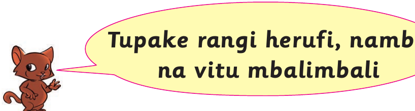
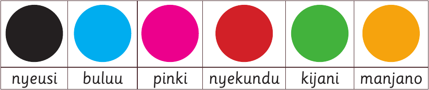
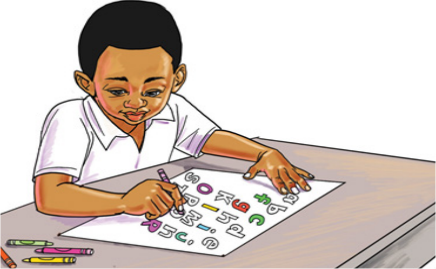

Tupake rangi maumbo ya herufi

Mhusika mdogo amesimama karibu na kiputo kinachowaalika wanafunzi kupaka rangi.
Rangi za aina mbalimbali

Miduara sita ya rangi imepangwa kutoka kushoto: nyeusi, buluu, pinki, nyekundu, kijani na manjano.
Tupake rangi maumbo ya herufi

Mwanafunzi ameketi mezani akipaka rangi maumbo ya herufi kwa kutumia penseli za rangi.36